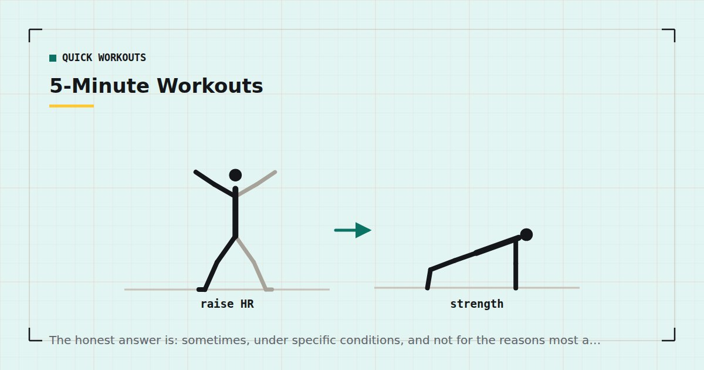

Quick Workouts & Plans
5-Minute Workouts: Are They Actually Worth Doing?
The honest answer is: sometimes, under specific conditions, and not for the reasons most articles claim. Here is what five minutes can and cannot buy you.

Search for five-minute workouts and you will find two kinds of article: ones promising a transformation, and ones dismissing the idea entirely. Both are wrong, in opposite directions.
Five minutes is a real amount of training time. It is also a small one, and what it buys depends almost entirely on what you do with it and what you are comparing it to. This post is an attempt to be precise about that.
What the claims usually are
Three claims recur, and they are worth separating because they have very different levels of support:
- “Five minutes can build muscle.” Heavily conditional, but not absurd.
- “Five minutes can replace a full workout.” Essentially false for most goals.
- “Five minutes is better than nothing.” True, and the most useful of the three.
What the evidence actually supports
The relevant research is not really about session length. It is about volume, effort and frequency, and the findings translate to short sessions in a way that is worth understanding.
Volume drives muscle growth, and it accumulates
A meta-analysis of weekly resistance training volume found a dose-response relationship: more weekly sets produced more hypertrophy, up to a point.1 The key word is weekly. The body does not appear to care greatly whether ten sets arrive in one session or across five short ones.
That is the strongest argument for very short workouts. Five minutes of focused work, done daily, is a meaningful weekly volume — considerably more than a thirty-minute session done once a fortnight because the thirty minutes never appeared.
Effort matters more than load when the load is light
With bodyweight training you cannot add weight, so intensity has to come from proximity to failure. A review comparing low and high loads found comparable hypertrophy when sets were taken close to failure.2 A five-minute session where every set is genuinely hard is a different proposition from five easy minutes.
Frequency is flexible
A meta-analysis of training frequency found that when weekly volume is equated, splitting it across more sessions produces similar or slightly better hypertrophy.3 Short daily sessions are a legitimate way to structure training, not a compromise.
None of this shows that five minutes a day equals an hour three times a week. It shows that weekly totals matter more than session length, and that short sessions accumulate into a weekly total. If your five minutes are easy, they accumulate into very little.
When five minutes genuinely works
- When it is daily. Five minutes once a week is negligible. Five minutes six days a week is thirty minutes of focused work, which is a real training week for a beginner.
- When it is hard. Two or three sets taken close to failure, with the movements chosen to cover a lot of muscle at once.
- When you are new to training. Beginners respond to relatively small doses. The gap between nothing and something is much larger than the gap between something and more.
- When it is a floor, not a ceiling. The best use of a five-minute session is as the version you do on bad days, so the habit does not break. That is exactly the mechanism described in how to stick to a home workout habit.
- When it breaks up sitting. Short movement breaks through a sedentary day address a different problem from training, and five minutes is a sensible unit for that.
When it does not
- For building substantial strength or muscle beyond the beginner phase. Once you need real volume per muscle group, five minutes cannot hold it.
- For cardiovascular fitness in any serious sense. Adult guidance is framed in weekly minutes of moderate or vigorous activity;4 five minutes a day is well short unless it is very intense.
- For weight loss. The energy cost is small. Diet does the overwhelming share of that work, as covered in the home workout weight-loss plan.
- When it is used to avoid a longer session you could have done. Five minutes is a floor for bad weeks, not a substitute for good ones.
Five minutes done daily beats thirty minutes done theoretically. That is the entire case, and it is a good one.
How to use five minutes well
If you are going to train for five minutes, structure matters more than usual because there is no room for waste.
Pick two movements, not six
One lower-body and one upper-body movement that each cover a lot of muscle. Squats and push-ups will do. Six exercises in five minutes means one set of each, which is not enough of anything.
Do three hard sets, not five easy ones
Roughly forty seconds of work and thirty seconds of rest, alternating movements. Take the last set of each close to failure.
Progress it like real training
Slow the lowering phase, lower the push-up surface, move to single-leg variations. The full ladder is in bodyweight exercise progressions. Without progression, five minutes stops producing anything within a couple of months.
Do not warm up for four of the five minutes
At this length, use the first set of each movement as the warm-up by making it deliberately easy, then work. A full warm-up protocol makes sense for a longer session — see the five-minute warm-up — not for a five-minute one.
The verdict
Five-minute workouts are worth doing if they are hard, frequent and progressive, and if you are honest that they are a small dose. They are the best available option on a bad day and a poor plan for a good one.
The most defensible use is as the minimum version of a bigger routine: on days when the real session is not happening, you do five minutes instead of nothing, and the habit survives to the following week. That is a much better reason to do them than any claim about what five minutes does to your metabolism.
Three five-minute templates
If you are going to do this, here are three structures that use the time properly. Each assumes no equipment and no warm-up beyond making the first set deliberately easy.
Template A — Lower and upper
The default. Alternate squats and push-ups for six sets total, 40 seconds work and 20 seconds rest. Sets one and two are the warm-up; sets five and six should be close to failure. Covers the most muscle for the time available.
Template B — One movement, done properly
Pick a single movement you are actively trying to improve — usually push-ups or squats — and do five sets of it with 30 seconds rest. Less total muscle worked, more focused progress on one thing. This is the better choice if you are chasing a specific goal like a first pull-up.
Template C — The anti-sitting break
Not really training. Two minutes of walking or marching, one minute of hip flexor stretching, one minute of glute bridges, one minute of shoulder rolls and thoracic extension. Aimed at the specific damage done by four uninterrupted hours in a chair, and better suited to that than a hard circuit. There is a fuller version in the mobility routine for desk workers.
The failure mode with very short sessions is variety. Five minutes is not enough time to explore; it is barely enough time to progress one or two movements. Choosing a template and running it for six weeks will produce more than rotating through all three.
Stacking short sessions across a day
One legitimate way to make short sessions add up is to do more than one, spaced out. Three five-minute blocks across a working day is fifteen minutes of training, and the evidence on weekly volume suggests the body largely responds to the weekly total rather than how it was packaged.1
Two practical caveats. Each block still needs its own brief ramp-up, so you lose a little time to that. And this only works if the blocks are genuinely hard — three easy five-minute breaks is a movement habit rather than a training stimulus, which is a fine thing to have but a different thing.
Where to go next
If five minutes is genuinely all you have most days, build it into something structured with the weekly home workout schedule. If you have fifteen, the 15-minute full-body workout is a considerably better use of them.
Frequently asked questions
Can you build muscle with 5-minute workouts?
Possibly, if they are done most days, taken close to failure, and progressed over time. Muscle growth tracks weekly training volume rather than session length, so short frequent sessions can accumulate a meaningful weekly total. Beginners will see more from this than trained lifters.
Is 5 minutes of exercise a day enough?
Not to meet adult activity guidelines, which are framed as weekly totals of moderate or vigorous activity plus strengthening work twice a week. Five minutes daily is a useful floor and clearly better than nothing, but it is not a complete programme.
Are 5-minute workouts better than nothing?
Yes, clearly, particularly for beginners and for breaking up long periods of sitting. The comparison that matters is not five minutes versus thirty, but five minutes versus the session that was not going to happen.
How should I structure a 5-minute workout?
Two compound movements rather than six, three hard sets alternating between them, roughly 40 seconds of work and 30 seconds of rest, with the final set of each taken close to failure. Skip the separate warm-up and use the first easy set instead.
Will 5-minute workouts help me lose weight?
Very little directly, because the energy cost is small. Diet drives most weight change. The indirect benefit is that a habit which survives builds toward longer sessions later.
Sources and further reading
- Schoenfeld BJ, Ogborn D, Krieger JW. “Dose-response relationship between weekly resistance training volume and increases in muscle mass: A systematic review and meta-analysis.” Journal of Sports Sciences, 2017;35(11):1073–1082. PubMed.
- Schoenfeld BJ, Grgic J, Ogborn D, Krieger JW. “Strength and Hypertrophy Adaptations Between Low- vs. High-Load Resistance Training: A Systematic Review and Meta-analysis.” Journal of Strength and Conditioning Research, 2017;31(12):3508–3523. PubMed.
- Schoenfeld BJ, Ogborn D, Krieger JW. “Effects of Resistance Training Frequency on Measures of Muscle Hypertrophy: A Systematic Review and Meta-Analysis.” Sports Medicine, 2016;46(11):1689–1697. PubMed.
- World Health Organization. WHO Guidelines on Physical Activity and Sedentary Behaviour. 2020.
Comments
Comments are not enabled yet. Add a hosted comment embed (Disqus, Commento, Giscus) inside this container when you are ready.